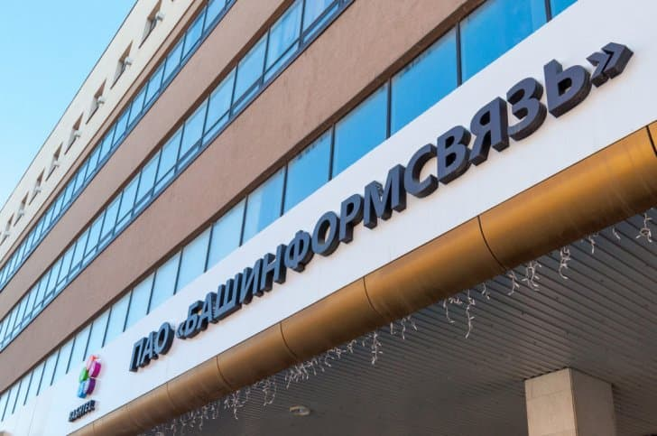
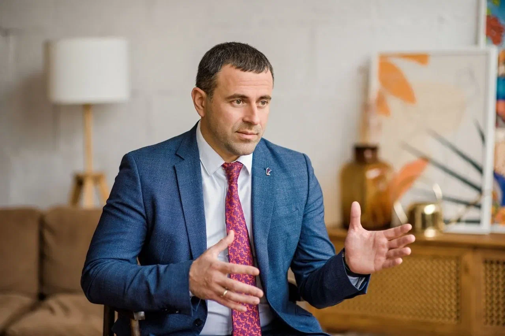
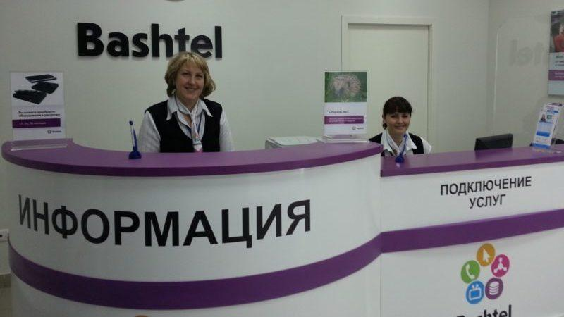

О компании



ПАО «Башинформсвязь» — крупный телекоммуникационный оператор и поставщик цифровых услуг в республике Башкортостан.
Сети связи компании охватывают все населенные пункты региона. Компания предоставляет клиентам широкий спектр современных услуг, включающий высокоскоростной доступ Интернет, кабельное и цифровое интерактивное телевидение, местную, внутризоновую, междугородную и международную связь.
ПАО «Башинформсвязь» продолжает модернизацию сетей связи и строительство новых волоконно-оптических линий на территории республики, что позволяет оказывать услуги связи в том числе крупнейшим корпоративным клиентам с разветвленной инфраструктурой.
Основными видами деятельности компании являются:
- Предоставление клиентам услуг связи (составляет 45% от общего дохода компании).
- Услуги платного телевидения.
- Облачные услуги, дата-центры
- Услуги передачи данных по ряду новейших технологий.
Компания предоставляет свои услуги на территории 54 районных центров и 9 городов республиканского значения. Она является главной среди коммуникационных компаний в регионе по протяженности сетей, количеству предоставляемых услуг и объему передаваемого трафика между сетями. 99% потребительского рынка республики в сфере телефонии занимает Башинформсвязь и лишь 1% – другие республиканские операторы. Помимо этого, 75% предприятий в республике пользуются телекоммуникационными услугами Башинформсвязь ПАО.
ПАО «Башинформсвязь» было образовано в 1992 году в результате акционирования государственного предприятия связи и информатики Республики Башкортостан.
В 1993 году компания начала предоставлять услуги сотовой связи в стандарте NMT-450, в 1998 году — в стандарте GSM-900, в 2000 году — с применением технологии CDMA.
В 2004 году компания начала предоставлять услуги широкополосного доступа в Интернет по технологии ADSL.
В 2009 году компания приобрела 98,77 % акций ОАО «Сотовая связь Башкортостана» (ССБ).
В 2012 году компания приобрела уфимскую точку обмена Интернет-трафиком ООО «БашТелекомСервис» (БТС).
В 2016 году компания приобрела регионального оператора АИСТ (компания) в Самарской области.
В 2021 году компания запустила крупнейшую модернизацию сетей по всей территории республики Башкортостан.
В 2022 году компания провела ребрендинг и полностью перешла на бренд-платформу "Ростелеком", окончательно отказавшись от использования бренда "Баштел".
Менеджмент
Политика ПАО «БАШИНФОРМСВЯЗЬ» в области качества
Главным направлением деятельности ПАО «Башинформсвязь» в области качества является создание организационных и технических предпосылок для производства и предоставления услуг, полностью удовлетворяющих потребности и ожидания потребителей, отвечающих требованиям норм, стандартов и условиям договоров, а также обеспечение высокоэффективной работы акционерного общества в целом.
| Цели в области качества |
|
| Задачи по достижению целей |
|
| Непрерывное повышение качества услуг |
|
| Эффективное использование ресурсов |
|
| Удовлетворение интересов заинтересованных сторон |
|
Ключевыми из конкурентных преимуществ являются:
- Современное программное обеспечение и надежная техническая база.
- Распространенность компании на территории всего региона.
- Большой спектр оказываемых услуг.
- Тренд современности в предоставляемых пакетах услуг.
- Высокая социальная ориентация, направленная на доступность услуг для каждого жителя региона.